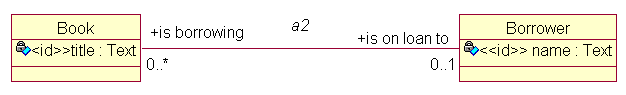
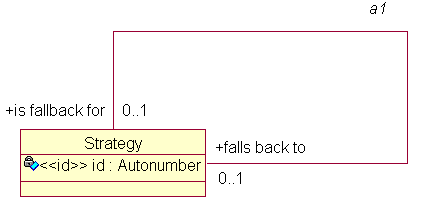

Role names in associations are very important, and should be verbs or verb phrases. Each end of the association must be named; the object of the verb phrase is the class at the same end as the name, the subject is the class at the other end. So, for example, you might have Window "appears on" Screen, Screen "displays" Window.
Often the role names will be inverses of each other, but sometimes things really do seem different depending on where you're standing.
You need to think carefully about the multiplicity of associations; they capture application rules and policies, which it's important to get right.
Clearly each Screen "displays" a number of Windows, but can a Window "appear on" more than one Screen? (perhaps, if you have multi-headed display capability). Can you have a Window which "appears on" no Screens? (well, no, not if your display technology is X--in which case "appears on" may not be quite right either, since the application could be iconised).
Unconditional multiplicity is good; if each end of an association is conditional (0..1, 0..n), maybe you should think more carefully about it. Perhaps there's some super/subtype (inheritance) relationship lurking in there.
In the original Shlaer-Mellor method, associations and inheritance relationships needed to be "formalised" by the use of "referential attributes". Considering the Window "appears on" Screen, where clearly there are many Windows but only one Screen, you'd need a referential attribute screen id in the Window instance.
ColdFrame, however, follows Executable UML; you usually don't need to provide referential attributes (it would be quite cumbersome to do so, since Rose (taking it as a typical UML tool) is unaware of the concept). Instead, ColdFrame automatically implements the relationships. Sometimes it needs a little help, for example for complex formalization or in a symmetric association.
Each Association maps into
It can be difficult to work out which of the navigation operations you need to use.

In the diagram, Domain.A2 has two navigation operations:
This is as though is borrowing() were an operation of Book and is on loan to() were an operation of Borrower.
It may help to ask yourself, as you write the assignment
Borrower_H := A2.what goes here (Book_H);
"what is the result that role this starting instance?"
which in this case is "what is the Borrower that is borrowing this Book?"

It's more difficult with reflexive associations, and if you get it wrong the compiler won't be able to help you. The litte mnemonic above needs adjustment;
"what is the other Strategy that role this Strategy"
and the answer is probably "is fallback for".